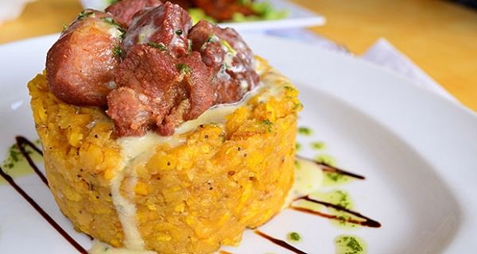

Mofongo

What is Mofongo?
Plantain mofongo is thought to originate in Puerto Rico, and is a dish
made from fried green (unripe) plantains mashed together with garlic
and crackling pork rinds, also known as chicharrón. To make mofongo,
the plantains are sliced and fried until tender, and then mashed with
garlic paste and pork cracklings. The mixture can either be formed into
balls or a half-dome shape. Mofongo is traditionally mashed in a mortar
and pestle, but you can use a potato masher if you don't have one.
Mofongo is a side dish as well as the main course, especially when
it is stuffed with meat or seafood. It can be accompanied by a protein,
such as chicken or shrimp, and beans and rice, but is also often
presented in a bowl with a broth poured over the top. The Puerto Rican
dish is also served directly out of the mortar.
Ingredients
- 2 cups of vegetable oil, for frying
- 3 medium green, unripe plantains
- 1 tablespoon of garlic paste
- 6 ounces of pork rinds or cracklings, crushed
Steps to make
- Gather the ingredients
- Heat about 2 inches of oil in a frying pan or deep fryer to 350 F.
- While the oil is heating up, peel the plantains and cut into 1-inch rounds.
- Fry the plantains until golden and tender. This will take approximatelu 4 to 6 minutes.
- Remove cooked plantains from the pan or fryer and allow to drain on paper towels.
- Put the garlic paste in the mixing bowl or mortar and add the friend plantains. Mash until thoroughly blended.
- Add the pork rinds. Continue to mash and mix until all the ingredients are well incorporated.
- Shape the mofongo into 4 balls and its ready to serve.
- Alternatively, you can make the mofongo into a half-dome shape using a small condiment bowl as a mold
- With the back of a spoon, smooth over and level off the mix.
- Then use the spoon to scrape around the bowl and remove the mofongo in a half-dome shape.
- Serve and enjoy.
Click the image to see the original post for this recipe.
Reurn Homepage